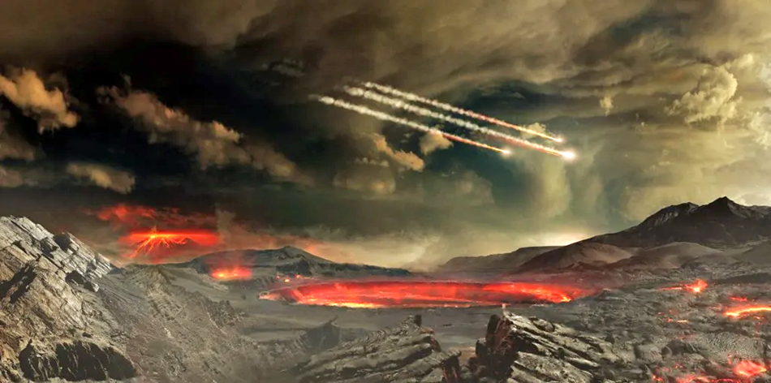
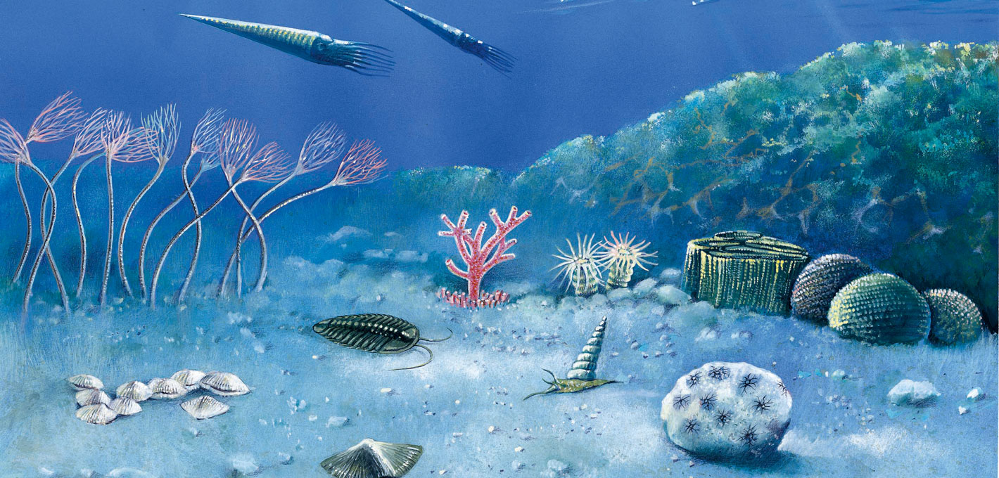
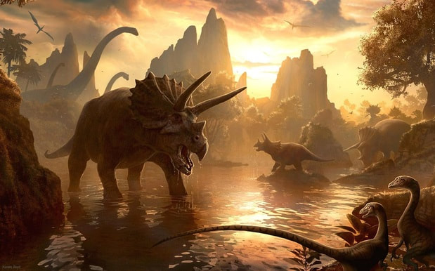
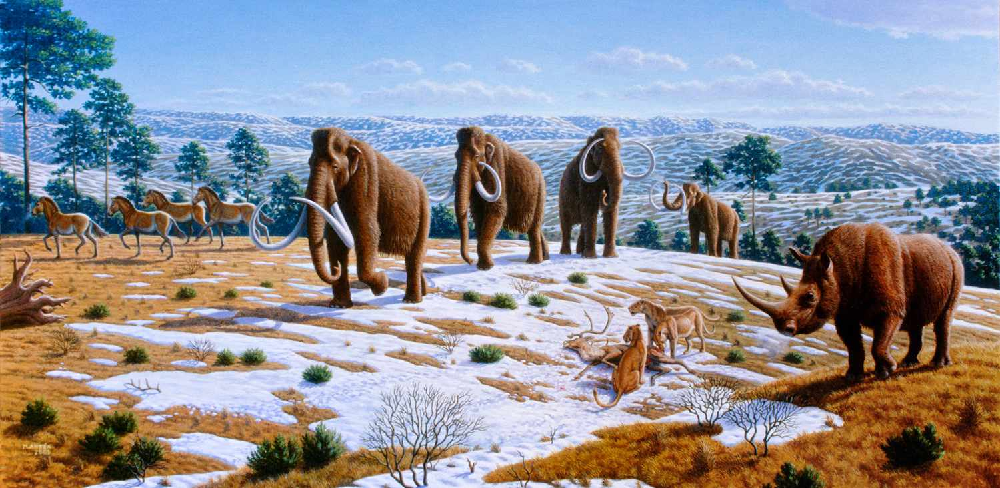

The history of the Earth is divided into major time spans called Eras. From its formation billions of years ago to the present day, Earth's evolution is categorized into four primary Eras:

This era marks the very beginning of Earth's history. It is divided into three eons: Hadean, Archean, and Proterozoic. Lasting billions of years, it covers the period from Earth's fiery formation to the stabilization of the atmosphere and the emergence of the first single-celled organisms in the oceans. This is the longest time span, laying the foundation for all life on Earth.

Consisting of six periods, this era saw an explosion of biodiversity. During the Cambrian period, marine life evolved rapidly. The Ordovician and Silurian periods saw the rise of the first vertebrates and land plants. The Devonian is known as the "Age of Fish," while the Carboniferous period gave rise to vast forests. The era ended with the Permian mass extinction, which wiped out nearly 90% of Earth's species.

Famously known as the "Age of Dinosaurs," this era is divided into three periods. In the Triassic, the first dinosaurs and small mammals appeared. By the Jurassic period, dinosaurs became the dominant creatures on Earth. The Cretaceous period introduced flowering plants but ended with a massive asteroid impact that caused the extinction of dinosaurs and many other life forms.

This is the modern era in which we currently live. During the Paleogene and Neogene periods, mammals and birds evolved and diversified rapidly. The most significant part is the Quaternary period, which began 2.6 million years ago. This period saw the Ice Ages and, most importantly, the evolution of modern humans and the dawn of civilization.